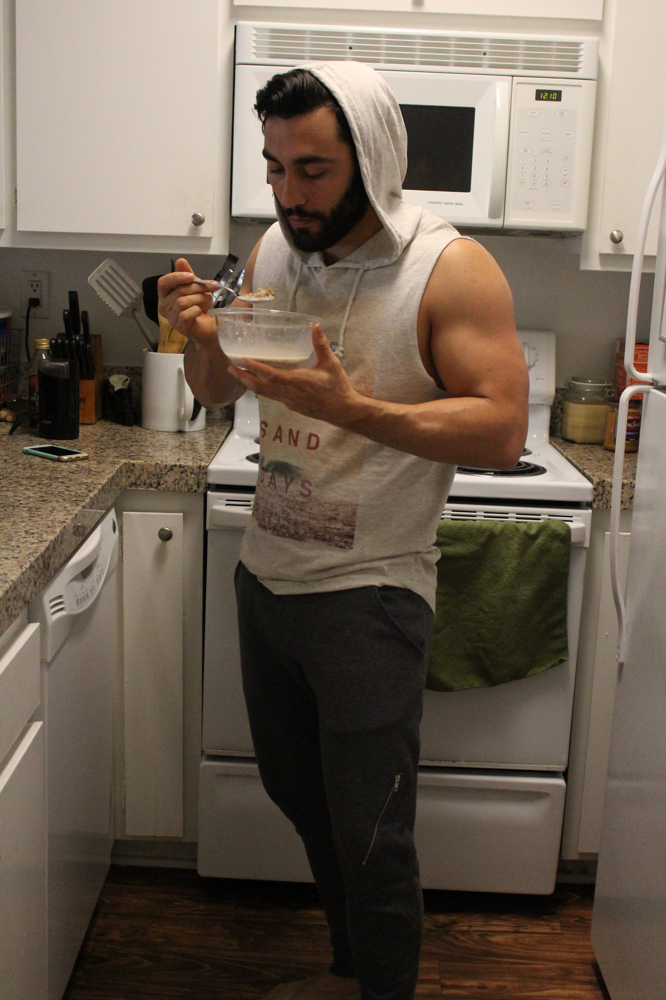

About Me
Hello and welcome to the Bryant Sands page and short life bio. If you're reading this that means you now know that I've taken a very large step to change the direction of my path from where I once was to where I will eventually be. I was born in Los Angeles and grew up in Santa Monica. I eventually moved to where I live now which is in Marina Del Rey. I tend to work a ton but I also like to stay very active. I spend most of my free time either working out or spending time with my 2 dogs. Both of my dogs are rescues. I have a larger dog named Brando and a smaller one named Gizmo. As you'd imagine the little one thinks he is the ruler of the 2. He thinks this until he messes with Brando one too many times and he ends up pinned on his back growling.